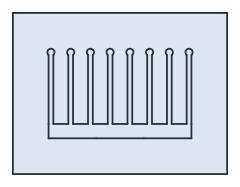

Heat sink: temperature in an extruded profile
The example is an extruded aluminum heat sink with a base of width = 60 by base_h = 6 and n = 8 fins, t = 2 thick and H = 30 high, each with a round bulb on top, in a box of air. A component under the middle of the base puts 20 W into every 100 mm of length, and the fins and the base give it to the air. NGSolve solves the section in 2D, and one fin is compared with fin theory. Lengths are in mm.

[1]:
import math
import ngsolve as ngs
from ngsolve.webgui import Draw
import planex as px
The section
The base is drawn with its bottom in three parts, the middle one being the heater, 20 wide. Every fin is a rectangle named fin0 to fin7, with a bulb of radius 1.5 on top that is named like its fin. The union keeps the names on the outline. A box of air, 15 larger on every side, surrounds it, glued to the aluminum so that the two share their edges, and the edges keep the heat sink’s names (Figure 1).
[3]:
width = 60.0
base_h = 6.0
n = 8
t = 2.0
H = 30.0
heater = 20.0
base = px.QuickSketch((-width / 2, 0))
base.Line((-heater / 2, 0), name="bottom").Line((heater / 2, 0), name="heater").Line((width / 2, 0), name="bottom")
base.Line((width / 2, base_h), name="base").Line((-width / 2, base_h), name="base").Close(name="base")
pitch = (width - t) / (n - 1)
fins = []
for i in range(n):
x = -width / 2 + i * pitch
fins.append(px.QuickSketch((x, base_h), dir=(1, 0)).Rectangle(t, H, name=f"fin{i}").Face())
fins.append(px.QuickSketch().Circle(x + t / 2, base_h + H, 1.5, name=f"fin{i}").Face())
sink = px.Unify([base.Face(), *fins])
sink.name = "aluminum"
box = px.QuickSketch().RectangleC((0, (base_h + H + 1.5) / 2), width + 30, base_h + H + 1.5 + 30, name="far").Face()
box.name = "air"
box.maxh = 5
model = px.Glue([box, sink])

Temperature
NGSolve solves for θ = T − T_air in the aluminum, with the air at T_air = 20 °C:
conduction at
k= 200 W/(m K), that is 0.2 W/(mm K);the heat flux on the heater, 20 W per 100 mm of length,
q= 0.2 W/mm over its width;convection
h_air= 25 W/(m² K) on the base and the fins;the rest of the bottom insulated.
The mesh covers the air as well, and the air acts through the convection on the shared edges. The plot shows the temperature in °C.
[5]:
T_air = 20.0
k = 0.2
h_air = 25e-6
q = 0.2
mesh = ngs.Mesh(px.OCCGeometry(model).GenerateMesh(maxh=1))
mesh.Curve(3)
fes = ngs.H1(mesh, order=2, definedon="aluminum")
u, v = fes.TnT()
air = ngs.ds(definedon=mesh.Boundaries("base|fin.*"))
a = ngs.BilinearForm(k * ngs.grad(u) * ngs.grad(v) * ngs.dx + h_air * u * v * air).Assemble()
f = ngs.LinearForm(q / heater * v * ngs.ds("heater")).Assemble()
theta = ngs.GridFunction(fes)
theta.vec.data = a.mat.Inverse(fes.FreeDofs()) * f.vec
temperature = mesh.MaterialCF({"aluminum": T_air + theta}, default=T_air)
print("hottest", round(T_air + max(theta.vec), 2), "°C")
Draw(temperature, mesh)
hottest 35.17 °C
One fin against fin theory
For a fin with a convective tip and its length corrected by t/2, fin theory gives q = sqrt(2 h k t) θ_b tanh(m L_c) with m = sqrt(2 h / (k t)), where θ_b is taken at the fin root. The bulb is not part of the theory and makes the fin slightly more effective. Check on fin 3, next to the middle:
[6]:
i = n // 2 - 1
x = -width / 2 + i * pitch + t / 2
fe = ngs.Integrate(h_air * theta * ngs.ds(f"fin{i}"), mesh)
mf = math.sqrt(2 * h_air / (k * t))
Lc = H + t / 2
theory = math.sqrt(2 * h_air * k * t) * theta(mesh(x, base_h)) * math.tanh(mf * Lc)
print("fin", i, round(fe * 100, 4), "W per 100 mm, fin theory", round(theory * 100, 4), "W")
print("fin efficiency", round(math.tanh(mf * Lc) / (mf * Lc), 3))
fin 3 2.3178 W per 100 mm, fin theory 2.2186 W
fin efficiency 0.962